A Obernai
le restaurant O’4 Sushi Bar vous donne rendez-vous et vous propose une plongée dans la tradition culinaire nippone.
La capacité étant limitée à 36 couverts, nous vous recommandons de réserver votre table.
Le temps moyen de préparation de commande est de 30 min.
Pour vos réunions, meeting, séminaire, évènements ou autres.
le restaurant O’4 Sushi Bar vous donne rendez-vous et vous propose une plongée dans la tradition culinaire nippone.


Epuré, contemporain et plein de peps, il donne envie de s’installer et de passer un moment autour d’un bon repas 100% japonais bien sûr !
et envies du Chef vous ferons apprécier des créations originales et déguster des sushi qui sortent des sentiers battus.
Nous travaillons uniquement avec des produits frais, de qualité et dans un cadre hygiénique irréprochable.
Nous vous proposons plus de 50 variétés de sushi tous préparés à la minute.
Aux antipodes de la restauration rapide, nous prenons le temps de vous offrir un moment dont vous vous souviendrez.


Quand nous passons dans le coin avec ma compagne, c’est un incontournable, personnel souriant et pro, mets au top, cadre soigné, propre, et design... LE TOP!
Les sushis sont vraiment très bons, les produits sont frais et plutôt bien présentés comparé à d'autres enseignes. Le Bo-Bun proposé était vraiment excellent, on sent le fait maison dans les nems. Le service était très agréable et la personne présente était aux petits soins. Nous y retournerons avec plaisir


 



Étant grand amateur de Japonais ( je fais plusieurs restaurants par semaine lors de mes déplacements en France ) je trouve que ce restaurant représente tout ce que je cherche dans ce type d'établissement. C'est propre, sobre, avec des tarifs normaux pour la qualité des produits servis. Le service est sérieux avec le sourire, étant seul à table j'ai beaucoup apprécié qu'elle vienne échanger quelques mots avec moi. Bref une adresse à découvrir dans cette belle ville pleine de charme.